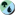
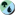

Ravnica Allegiance (spoiler)¶
- Angel of Grace
Błysk
Latanie
Kiedy ta karta wejdzie na pole walki, do końca tury obrażenia mogące zredukować twoje punkty życia do mniej niż 1 zamiast tego redukują je do 1.

 , wygnaj tę kartę z twojego cmentarza: Twoje punkty życia otrzymują wartość 10.
, wygnaj tę kartę z twojego cmentarza: Twoje punkty życia otrzymują wartość 10.- Angelic Exaltation
- Ilekroć stwór pod twoim władaniem atakuje sam, dostaje do końca tury +X/+X , gdzie X jest liczbą stworów pod twoim władaniem.
- Archway Angel
Latanie
Kiedy ta karta wejdzie na pole walki, zyskujesz 2 życia za każdą Bramę pod twoim władaniem.
- Arrester's Zeal
Wskazany stwór dostaje +2/+2 do końca tury.
Dopisek — Jeśli rzucasz ten czar w twojej fazie głównej, ów stwór zyskuje latanie do końca tury.
- Bring to Trial
- Wygnaj wskazanego stwora o sile 4 lub większej.
- Civic Stalwart
- Kiedy ta karta wejdzie na pole walki, stwory pod twoim władaniem dostają +1/+1 do końca tury.
- Concordia Pegasus
- Latanie
- Expose to Daylight
- Zniszcz wskazany artefakt lub urok. Wróż 1.
- Forbidding Spirit
- Kiedy ta karta wejdzie na pole walki, do twojej następnej tury stwory nie mogą atakować ciebie ani wędrowców pod twoim władaniem dopóki ich władca nie zapłaci
 za każdego z owych stworów.
za każdego z owych stworów. - Haazda Officer
- Kiedy ta karta wejdzie na pole walki, wskazany stwór pod twoim władaniem dostaje +1/+1 do końca tury.
- Hero of Precinct One
- Ilekroć rzucasz wielokolorowy czar, stwórz żeton białego stwora Człowiek 1/1.
- Impassioned Orator
- Ilekroć inny stwór wejdzie na pole walki pod twoim władaniem, zyskujesz 1 życie.
- Justiciar's Portal
- Wygnaj wskazanego stwora pod twoim władaniem, następnie przywróć ową kartę na pole walki pod władaniem jej właściciela. Zyskuje on pierwszy cios do końca tury.
- Knight of Sorrows
Ten stwór może w każdej walce blokować dodatkowego stwora.
Życie-po-życiu 1 (Kiedy ten stwór umrze, stwórz żeton biało-czarnego stwora Duch 1/1 z lataniem.)
- Lumbering Battlement
Czujność
Kiedy ta karta wejdzie na pole walki, wygnaj dowolną liczbę innych nieżetonowych stworów pod twoim władaniem dopóki ta karta nie opuści pola walki.
Ten stwór dostaje +2/+2 za każdą kartę wygnaną z jego pomocą.
- Ministrant of Obligation
- Życie-po-życiu 2 (Kiedy ten stwór umrze, stwórz dwa żetony biało-czarnego stwora Duch 1/1 z lataniem.)
- Rally to Battle
- Stwory pod twoim władaniem dostają +1/+3 do końca tury. Odkręć je.
- Resolute Watchdog
Obronność
 , poświęć ten permanent: Wskazany stwór pod twoim władaniem zyskuje niezniszczalność do końca tury. (Obrażenia oraz efekty mówiące „zniszcz” nie niszczą go.)
, poświęć ten permanent: Wskazany stwór pod twoim władaniem zyskuje niezniszczalność do końca tury. (Obrażenia oraz efekty mówiące „zniszcz” nie niszczą go.)- Sentinel's Mark
Błysk
Zaurocz stwora
Zauroczony stwór dostaje +1/+2 i ma czujność.
Dopisek — Kiedy ta karta wejdzie na pole walki, jeśli została rzucona w twojej fazie głównej, zauroczony stwór zyskuje więź życia do końca tury.
- Sky Tether
Zaurocz stwora
Zauroczony stwór ma obronność i traci latanie.
- Smothering Tithe
- Ilekroć przeciwnik dobiera kartę, ów gracz może zapłacić . Jeśli ów gracz tego nie zrobi, stwórz żeton bezkolorowego artefaktu Skarb ze zdolnością „
 , poświęć ten artefakt: Dostajesz jedną manę dowolnego koloru.”
, poświęć ten artefakt: Dostajesz jedną manę dowolnego koloru.” - Spirit of the Spires
Latanie
Inne stwory pod twoim władaniem mające latanie dostają +0/+1.
- Summary Judgment
Ten czar zadaje 3 obrażenia wskazanemu przekręconemu stworowi.
Dopisek — Jeśli rzucasz ten czar w twojej fazie głównej, zamiast tego zadaje on 5 obrażeń w owego stwora.
- Syndicate Messenger
Latanie
Życie-po-życiu 1 (Kiedy ten stwór umrze, stwórz żeton biało-czarnego stwora Duch 1/1 z lataniem.)
- Tenth District Veteran
Czujność
Ilekroć ten stwór atakuje, odkręć innego wskazanego stwora pod twoim władaniem.
- Tithe Taker
Podczas twojej tury rzucanie czarów przez twoich przeciwników oraz aktywowanie przez nich zdolności kosztuje o
więcej, za wyjątkiem zdolności dających manę.Życie-po-życiu 1 (Kiedy ten stwór umrze, stwórz żeton biało-czarnego stwora Duch 1/1 z lataniem.)
- Twilight Panther
 : Ten stwór zyskuje do końca tury dotyk śmierci.
: Ten stwór zyskuje do końca tury dotyk śmierci.- Unbreakable Formation
Stwory pod twoim władaniem zyskują do końca tury niezniszczalność.
Dopisek — Jeśli rzucasz ten czar w twojej fazie głównej, umieść znacznik +1/+1 na każdym z owych stworów i zyskują one dodatkowo czujność do końca tury.
- Watchful Giant
- Kiedy ta karta wejdzie na pole walki, stwórz żeton białego stwora Człowiek 1/1.
- Arrester's Admonition
Zwróć wskazanego stwora do ręki jego właściciela.
Dopisek — Jeśli rzucasz ten czar w twojej fazie głównej, dobierz kartę.
- Benthic Biomancer
 : Adaptacja 1. (Jeśli ten stwór nie ma znaczników +1/+1, umieść na nim znacznik +1/+1.)
: Adaptacja 1. (Jeśli ten stwór nie ma znaczników +1/+1, umieść na nim znacznik +1/+1.)Ilekroć jeden lub więcej znaczników +1/+1 jest umieszczanych na tym permanencie, dobierz kartę, następnie odrzuć kartę.
- Chillbringer
Latanie
Kiedy ta karta wejdzie na pole walki, przekręć wskazanego stwora pod władaniem przeciwnika. Nie odkręci się on w najbliższym kroku odkręcania swojego władcy.
- Clear the Mind
Wskazany gracz wtasowuje swój cmentarz do swojej biblioteki.
Dobierz kartę.
- Code of Constraint
Wskazany stwór dostaje -4/-0 do końca tury.
Dobierz kartę.
Dopisek — Jeśli rzucasz ten czar w twojej fazie głównej, przekręć owego stwora i nie odkręci się on w najbliższym kroku odkręcania jego władcy.
- Essence Capture
- Skontruj wskazany czar stwora. Umieść znacznik +1/+1 na co najwyżej jednym wskazanym stworze pod twoim władaniem.
- Eyes Everywhere
Na początku twojego kroku utrzymania, wróż 1.
 : Zamień władanie nad tym permanentem i wskazanym nielądowym permanentem. Używaj jako obrzędu.
: Zamień władanie nad tym permanentem i wskazanym nielądowym permanentem. Używaj jako obrzędu.- Faerie Duelist
Błysk
Latanie
Kiedy ta karta wejdzie na pole walki, wskazany stwór pod władaniem przeciwnika dostaje -2/-0 do końca tury.
- Gateway Sneak
Ilekroć Brama wchodzi na pole walki pod twoim władaniem, ten stwór nie może być blokowany w tej turze.
Ilekroć ten stwór zada graczowi obrażenia bojowe, dobierz kartę.
- Humongulus
- Antyklątwa (Ten stwór nie może być wskazywany przez czary lub zdolności władane przez twoich przeciwników.)
- Mass Manipulation
- Zyskujesz władanie nad X wskazanymi stworami i/lub wędrowcami.
- Mesmerizing Benthid
Kiedy ta karta wejdzie na pole walki, stwórz dwa żetony niebieskiego stwora Iluzja 0/2 ze zdolnością „Ilekroć ten stwór blokuje stwora, ów stwór nie odznacza się w najbliższym kroku oznaczania swojego władcy.”
Ten permanent ma antyklątwę dopóki władasz Iluzją.
- Persistent Petitioners
- , : Wskazany gracz umieszcza wierzchnią kartę swojej biblioteki w swoim cmentarzu.
Przekręć czterech odkręconych Doradców pod twoim władaniem: Wskazany gracz umieszcza dwanaście wierzchnich kart swojej biblioteki w swoim cmentarzu.
Talia może zawierać dowolną liczbę kart o nazwie Persistent Petitioners.
- Precognitive Perception
Dobierz trzy karty.
Dopisek — Jeśli rzucasz ten czar w twojej fazie głównej, zamiast tego wróż 3, następnie dobierz trzy karty.
- Prying Eyes
- Dobierz cztery karty, następnie odrzuć dwie karty.
- Pteramander
Latanie
 : Adaptacja 4. Aktywacja ten zdolności kosztuje o mniej za każdą kartę sztuczki lub obrzędu w twoim cmentarzu. (Jeśli ten stwór nie ma znaczników +1/+1, umieść na nim cztery znaczniki +1/+1.)
: Adaptacja 4. Aktywacja ten zdolności kosztuje o mniej za każdą kartę sztuczki lub obrzędu w twoim cmentarzu. (Jeśli ten stwór nie ma znaczników +1/+1, umieść na nim cztery znaczniki +1/+1.)- Quench
- Skontruj wskazany czar o ile jego władca nie dopłaci .
- Sage's Row Savant
- Kiedy ta karta wejdzie na pole walki, wróż 2.
- Senate Courier
Latanie
: Ten stwór zyskuje czujność do końca tury.- Shimmer of Possibility
- Spójrz na cztery wierzchnie karty twojej biblioteki. Umieść jedną z nich w twojej ręce, a pozostałe w losowej kolejności na spodzie twojej biblioteki.
- Skatewing Spy
- : Adaptacja 2. (Jeśli ten stwór nie ma znaczników +1/+1, umieść na nim dwa znaczniki +1/+1.)
Każdy stwór pod twoim władaniem mający znacznik +1/+1, ma latanie.
- Skitter Eel
- : Adapt 2. (If this creature has no +1/+1 counters on it, put two +1/+1 counters on it.)
- Slimebind
Błysk
Zaurocz stwora
Zauroczony stwór dostaje -4/-0.
- Sphinx of Foresight
Możesz ujawnić tę kartę z twojej początkowej ręki. Jeśli to zrobisz, wróż 3 na początku twojego pierwszego kroku utrzymania.
Latanie
Na początku twojego kroku utrzymania, wróż 1.
- Swirling Torrent
Wybierz jedno lub oba —
- Umieść wskazanego stwora na wierzchu biblioteki jego właściciela.
- Zwróć wskazanego stwora do ręki jego właściciela.
- Thought Collapse
- Skontruj wskazany czar. Jego władca umieszcza trzy wierzchnie karty swojej biblioteki w swoim cmentarzu.
- Verity Circle
Ilekroć stwór pod władaniem przeciwnika zostaje przekręcony, jeśli nie jest deklarowany jako atakujący, możesz dobrać kartę.
: Przekręć wskazanego stwora bez latania.- Wall of Lost Thoughts
Obronność
Kiedy ta karta wejdzie na pole walki, wskazany gracz umieszcza cztery wierzchnie karty swojej biblioteki w swoim cmentarzu.
- Windstorm Drake
Latanie
Inne stwory pod twoim władaniem mające latanie dostają +1/+0.
- Awaken the Erstwhile
- Każdy gracz odrzuca wszystkie karty ze swojej ręki, następnie tworzy tyle samo żetonów czarnego stwora Zombi 2/2.
- Bankrupt in Blood
Poświęć dwa stwory jako dodatkowy koszt rzucenia tego czaru.
Dobierz trzy karty.
- Blade Juggler
Widowisko
(Możesz rzucić ten czar za koszt widowiska zamiast normalny koszt many jeśli przeciwnik stracił życie w tej turze.)Kiedy ta karta wejdzie na pole walki, zadaje tobie 1 obrażenie i dobierasz kartę.
- Bladebrand
Wskazany stwór zyskuje dotyk śmierci do końca tury.
Dobierz kartę.
- Bloodmist Infiltrator
- Ilekroć ten stwór atakuje, możesz poświęcić innego stwora. Jeśli to zrobisz, ten stwór nie może być blokowany w tej turze.
- Carrion Imp
Latanie
Kiedy ta karta wejdzie na pole walki, możesz wygnać wskazaną kartę stwora z dowolnego cmentarza. Jeśli to zrobisz, zyskujesz 2 życia.
- Clear the Stage
- Wskazany stwór dostaje -3/-3 do końca tury. Jeśli władasz stworem o sile 4 lub większej, możesz przywrócić co najwyżej jedną wskazaną kartę stwora z twojego cmentarza do twojej ręki.
- Consign to the Pit
- Zniszcz wskazanego stwora. Ten czar zadaje 2 obrażenia władcy owego stwora.
- Cry of the Carnarium
- Wszystkie stwory dostają -2/-2 do końca tury. Wygnaj ze wszystkich cmentarzy wszystkie karty stworów, które trafiły tam z pola walki w tej turze. Jeśli stwór miałby umrzeć w ten sposób, zamiast tego wygnaj go.
- Dead Revels
Widowisko
(Możesz rzucić ten czar za koszt widowiska zamiast normalny koszt many jeśli przeciwnik stracił życie w tej turze.)Przywróć co najwyżej dwie wskazany karty stworów z twojego cmentarza do twojej ręki.
- Debtors' Transport
- Życie-po-życiu 2 (Kiedy ten stwór umrze, stwórz dwa żetony biało-czarnego stwora Duch 1/1 z lataniem.)
- Drill Bit
Widowisko
(Możesz rzucić ten czar za koszt widowiska zamiast normalny koszt many jeśli przeciwnik stracił życie w tej turze.)Wskazany gracz ujawnia swoją rękę. Wybierasz z niej nie-lądową kartę. Ów gracz odrzuca ową kartę.
- Font of Agonies
Ilekroć płacisz życiem, umieść tyle samo znaczników krwi na tym permanencie.
, usuń cztery znaczniki krwi z tego permanentu: Zniszcz wskazanego stwora.- Grotesque Demise
- Wygnaj wskazanego stwora o sile 3 lub mniejszej.
- Gutterbones
Ta karta wchodzi na pole walki przekręcona.
: Przywróć tę kartę z twojego cmentarza do twojej ręki. Aktywuj tę zdolność tylko w twojej turze i tylko jeśli przeciwnik stracił życie w tej turze.- Ill-Gotten Inheritance
Na początku twojego kroku utrzymania, ten permanent zadaje każdemu przeciwnikowi po 1 obrażeniu, a ty zyskujesz 1 życie.
, poświęć ten permanent: Zadaje on 4 obrażenia wskazanemu przeciwnikowi, a ty zyskujesz 4 życia.- Noxious Groodion
- Dotyk śmierci
- Orzhov Enforcer
Dotyk śmierci
Życie-po-życiu 1 (Kiedy ten stwór umrze, stwórz żeton biało-czarnego stwora Duch 1/1 z lataniem.)
- Orzhov Racketeers
Ilekroć ten stwór zadaje graczowi obrażenia bojowe, ów gracz odrzuca kartę.
Życie-po-życiu 2 (Kiedy ten stwór umrze, stwórz dwa żetony biało-czarnego stwora Duch 1/1 z lataniem.)
- Pestilent Spirit
Złowrogość, dotyk śmierci
Czary sztuczek i obrzędów pod twoim władaniem mają dotyk śmierci. (Dowolna ilość obrażeń zadana przez nie stworowi wystarcza, aby został zniszczony.)
- Plague Wight
- Ilekroć ten stwór zostaje zablokowany, każdy z blokujących go stworów dostaje -1/-1 do końca tury.
- Priest of Forgotten Gods
- , poświęć dwa inne stwory: Każdy z dowolnej liczby wskazany graczy traci po 2 życia i poświęca stwora. Dostajesz i dobierasz kartę.
- Rakdos Trumpeter
Złowrogość (Ten stwór nie może być zablokowany, chyba że przez co najmniej dwa stwory.)

 : Ten stwór dostaje +2/+0 do końca tury.
: Ten stwór dostaje +2/+0 do końca tury.- Spawn of Mayhem
Widowisko
(Możesz rzucić ten czar za koszt widowiska zamiast normalny koszt many jeśli przeciwnik stracił życie w tej turze.)Latanie, tratowanie
Na początku twojego kroku utrzymania, ten permanent zadaje każdemu graczowi po 1 obrażeniu. Następnie jeśli masz 10 lub mniej życia, połóż znacznik +1/+1 na tym permanencie.
- Spire Mangler
Błysk
Latanie
Kiedy ta karta wejdzie na pole walki, wskazany stwór z lataniem pod twoim władaniem dostaje do końca tury +2/+0.
- Thirsting Shade
Więź życia
: Ten stwór dostaje +1/+1 do końca tury.- Undercity Scavenger
- Kiedy ta karta wejdzie na pole walki, możesz poświęcić innego stwora. Jeśli to zrobisz, umieść dwa znaczniki +1/+1 na tym stworze, następnie wróż 2.
- Undercity's Embrace
- Target opponent sacrifices a creature. If you control a creature with power 4 or greater, you gain 4 life.
- Vindictive Vampire
- Ilekroć umrze inny stwór pod twoim władaniem, ten permanent zadaje każdemu przeciwnikowi po 1 obrażeniu, a ty zyskujesz 1 życie.
- Act of Treason
- Zyskujesz władanie nad wskazanym stworem do końca tury. Odkręć owego stwora. Zyskuje on pośpiech do końca tury. (Może atakować i w tej turze.)
- Amplifire
- Na początku twojego kroku utrzymania, ujawniaj karty z wierzchu twojej biblioteki dopóki nie ujawnisz karty stwora. Do końca tury bazowa siła tego permanentu staje się dwukrotnością siły owej karty, a bazowa wytrzymałość tego permanentu staje się dwukrotnością wytrzymałości owej karty. Umieść ujawnione karty na spodzie twojej biblioteki w losowej kolejności.
- Burn Bright
- Stwory pod twoim władaniem dostają +2/+0 do końca tury.
- Burning-Tree Vandal
Riot (This creature enters the battlefield with your choice of a +1/1+ counter or haste.)
Ilekroć ten stwór atakuje, możesz odrzucić kartę. Jeśli to zrobisz, dobierz kartę.
- Cavalcade of Calamity
- Ilekroć atakuje stwór pod twoim władaniem o sile 1 lub mniejszej, ten permanent zadaje 1 obrażenia graczowi lub wędrowcowi, którego ów stwór atakuje.
- Clamor Shaman
Riot (This creature enters the battlefield with your choice of a +1/1+ counter or haste.)
Ilekroć ten stwór atakuje, wskazany stwór pod władaniem przeciwnika nie może blokować w tej turze.
- Dagger Caster
- Kiedy ta karta wejdzie na pole walki, zadaje każdemu przeciwnikowi oraz każdemu stworowi pod ich władaniem po 1 obrażeniu.
- Deface
Wybierz jedno —
- Zniszcz wskazany artefakt.
- Zniszcz wskazanego stwora z obronnością.
- Electrodominance
- Ten czar zadaje X obrażeń w dowolnie wskazany cel. Możesz rzucić kartę o skróconym koszcie many X lub mniejszym z twojej ręki bez płacenia jej kosztu many.
- Flames of the Raze-Boar
- Ten czar zadaje wskazanemu stworowi pod władaniem przeciwnika 4 obrażenia. Następnie ten czar zadaje 2 obrażenia każdemu innemu stworowi pod władaniem owego gracza jeśli władasz stworem o sile 4 lub większej.
- Gates Ablaze
- Ten czar zadaje X obrażeń każdemu stworowi, gdzie X jest liczbą Bram pod twoim władaniem.
- Ghor-Clan Wrecker
Riot (This creature enters the battlefield with your choice of a +1/1+ counter or haste.)
Złowrogość (Ten stwór nie może być zablokowany, chyba że przez co najmniej dwa stwory.)
- Goblin Gathering
- Stwórz o dwa więcej żetonów czerwonego stwora Goblin 1/1, niż masz kart o nazwie Goblin Gathering w swoim cmentarzu.
- Gravel-Hide Goblin
 : Ten stwór dostaje +2/+2 do końca tury.
: Ten stwór dostaje +2/+2 do końca tury.- Immolation Shaman
Ilekroć przeciwnik aktywuje zdolność nie dającą many artefaktu, stwora lub lądu, niniejszy permanent zadaje owemu graczowi 1 obrażenie.
: Ten stwór dostaje do końca tury +3/+3 i złowrogość.- Light Up the Stage
Widowisko
(Możesz rzucić ten czar za koszt widowiska zamiast normalny koszt many jeśli przeciwnik stracił życie w tej turze.)Wygnaj dwie wierzchnie karty twojej biblioteki. Do końca twojej następnej tury możesz zagrywać owe karty.
- Mirror March
- Ilekroć nie-żetonowy stwór wejdzie na pole walki pod twoim władaniem, rzucaj monetą dopóki nie przegrasz rzutu. Za każdy wygrany rzut stwórz żeton będący kopią owego stwora. Owe żetony zyskują pośpiech. Wygnaj je na początku najbliższego kroku końcowego.
- Rix Maadi Reveler
Widowisko
(Możesz rzucić ten czar za koszt widowiska zamiast normalny koszt many jeśli przeciwnik stracił życie w tej turze.)Kiedy ta karta wejdzie na pole walki, odrzuć kartę, następnie dobierz kartę. Jeśli został opłacony koszt widowiska tej karty, zamiast tego odrzuć rękę, następnie dobierz trzy karty.
- Rubble Reading
- Zniszcz wskazany ląd. Wróż 2.
- Rubblebelt Recluse
- Ten stwór atakuje w każdej walce, jeśli może.
- Rumbling Ruin
- Kiedy ta karta wejdzie na pole walki, policz znaczniki +1/+1 na stworach pod twoim władaniem. Stwory pod władaniem twoich przeciwników mające siłę równą owej liczbie lub mniejszą, nie mogą blokować w tej turze.
- Scorchmark
- Ten czar zadaje wskazanemu stworowi 2 obrażenia. Jeśli ów stwór miałby umrzeć w tej turze, zamiast tego wygnaj go.
- Skarrgan Hellkite
Zamieszki (Możesz wybrać, czy ten stwór wejdzie na pole walki mając znacznik +1/+1, czy pośpiech.)
Latanie
: Ten permanent zadaje 2 obrażenia rozdzielone według twojego wyboru pomiędzy jeden lub dwa wskazane cele. Aktywuj tę zdolność tylko jeśli ten permanent ma znacznik +1/+1.- Skewer the Critics
Widowisko
(Możesz rzucić ten czar za koszt widowiska zamiast normalny koszt many jeśli przeciwnik stracił życie w tej turze.)Ten czar zadaje 3 obrażenia w dowolnie wskazany cel.
- Smelt-Ward Ignus
- , poświęć ten permanent: Zyskujesz do końca tury władanie nad wskazanym stworem o sile 3 lub mniejszym. Odkręć owego stwora. Zyskuje on pośpiech do końca tury. Aktywuj jako obrzęd.
- Spear Spewer
Obronność
: Ten stwór zadaje każdemu graczowi po 1 obrażeniu.- Spikewheel Acrobat
- Widowisko (Możesz rzucić ten czar za koszt widowiska zamiast normalny koszt many jeśli przeciwnik stracił życie w tej turze.)
- Storm Strike
- Wskazany stwór dostaje do końca tury +1/+0 oraz pierwszy cios. Wróż 1.
- Tin Street Dodger
Pośpiech
Ten stwór nie może być blokowany w tej turze, chyba że przez stwory z obronnością.
- Biogenic Ooze
Kiedy ta karta wejdzie na pole walki, stwórz żeton zielonego stwora Szlam 2/2.
Na początku twojego kroku końcowego, umieść znacznik +1/+1 na każdym Szlamie pod twoim władaniem.
: Stwórz żeton zielonego stwora Szlam 2/2.- Biogenic Upgrade
- Rozmieść trzy znaczniki +1/+1 pomiędzy jednym, dwoma lub trzema wskazanymi stworami, następnie podwój liczbę znaczników +1/+1 na każdym z owych stworów.
- End-Raze Forerunners
Czujność, tratowanie, pośpiech
Kiedy ta karta wejdzie na pole walki, inne stwory pod twoim władaniem dostają do końca tury +2/+2 oraz czujność i tratowanie.
- Enraged Ceratok
- Enraged Ceratok can’t be blocked by creatures with power 2 or less.
- Gatebreaker Ram
Ten stwór dostaje +1/+1 za każdą Bramę pod twoim władaniem.
O ile władasz co najmniej dwiema Bramami, ten stwór ma czujność i tratowanie.
- Gift of Strength
- Wskazany stwór dostaje do końca tury +3/+3 oraz zasięg.
- Growth-Chamber Guardian
- : Adaptacja 2. (Jeśli ten stwór nie ma znaczników +1/+1, umieść na nim dwa znaczniki +1/+1.)
Ilekroć co najmniej jeden znacznik +1/+ jest umieszczany na tym permanencie, możesz poszukać w twojej bibliotece kartę o nazwie Growth-Chamber Guardian, ujawnić ją, umieścić w twojej ręce, a następnie przetasować twoją bibliotekę.
- Gruul Beastmaster
Zamieszki (Możesz wybrać, czy ten stwór wejdzie na pole walki mając znacznik +1/+1, czy pośpiech.)
Ilekroć ten stwór atakuje, inny wskazany stwór pod twoim władaniem dostaje +x/+0 do końca tury, gdzie X jest siłą niniejszego stwora.
- Guardian Project
- Ilekroć nie-żetonowy stwór wejdzie na pole walki pod twoim władaniem, jeśli ów stwór nie ma tej samej nazwy, co inna karta stwora pod twoim władaniem lub w twoim cmentarzu, dobierz kartę.
- Incubation Druid
- : Dostajesz jedną manę w typie, który mógłby zostać wydany przez dowolny ląd pod twoim władaniem. Jeśli ten stwór ma znacznik +1/+1, dostajesz zamiast tego trzy many owego typu.: Adaptacja 3. (Jeśli ten stwór nie ma znaczników +1/+1, umieść na nim cztery znaczniki +1/+1.)
- Mammoth Spider
- Zasięg
- Open the Gates
- Poszukaj w twojej bibliotece kartę bazowego lądu lub Bramy, ujawnij ją, umieść w twojej ręce, następnie przetasuj twoją bibliotekę.
- Rampage of the Clans
- Zniszcz wszystkie artefakty i uroki. Za każdy permanent zniszczony w ten sposób, jego władca tworzy żeton zielonego stwora Centaur 3/3.
- Rampaging Rendhorn
- Zamieszki (Możesz wybrać, czy ten stwór wejdzie na pole walki mając znacznik +1/+1, czy pośpiech.)
- Regenesis
- Przywróć co najwyżej dwie wskazane karty permanentu z twojego cmentarza do twojej ręki.
- Root Snare
- Zażegnaj wszystkie obrażenia bitewne, które mogłyby zostać zadane w tej turze.
- Sagittars' Volley
- Zniszcz wskazanego stwora z lataniem. Ten czar zadaje każdemu stworowi z lataniem pod władaniem twoich przeciwników 1 obrażenie.
- Saruli Caretaker
Obronność
, przekręć odkręconego stwora pod twoim władaniem: Dostajesz jedną manę dowolnego koloru.- Sauroform Hybrid
- : Adaptacja 4. (Jeśli ten stwór nie ma znaczników +1/+1, umieść na nim cztery znaczniki +1/+1.)
- Silhana Wayfinder
- Kiedy ta karta wejdzie na pole walki, spójrz na cztery wierzchnie karty twojej biblioteki. Możesz ujawnić spośród nich kartę stwora lub lądu i umieścić ją na wierzchu twojej biblioteki. Umieść pozostałe w losowej kolejności na spodzie twojej biblioteki.
- Steeple Creeper
- : Ten stwór zyskuje latanie do końca tury.
- Stony Strength
- Umieść znacznik +1/+1 na wskazanym stworze pod twoim władaniem. Odkręć owego stwora.
- Sylvan Brushstrider
- Kiedy ta karta wejdzie na pole walki, zyskujesz 2 życia.
- Territorial Boar
- Ilekroć stwór o sile 4 lub większej wejdzie na pole walki pod twoim władaniem, niniejszy stwór dostaje do końca tury +1/+1 oraz czujność.
- Titanic Brawl
Rzucenie tego czaru kosztuje o
mniej, jeśli wskazuje on mającego znacznik +1/+1 stwora pod twoim władaniem.Wskazany stwór pod twoim władaniem walczy ze wskazanym stworem, którym nie władasz. (Zadają sobie nawzajem obrażenia równe swojej sile.)
- Tower Defense
- Stwory pod twoim władaniem dostają do końca tury +0/+5 oraz zasięg.
- Trollbred Guardian
- : Adaptacja 2. (Jeśli ten stwór nie ma znaczników +1/+1, umieść na nim dwa znaczniki +1/+1.)
Każdy stwór pod twoim władaniem mający znacznik +1/+1, ma tratowanie.
- Wilderness Reclamation
- Na początku twojego kroku końcowego, odkręć wszystkie lądy pod twoim władaniem.
- Wrecking Beast
Riot (This creature enters the battlefield with your choice of a +1/1+ counter or haste.)
Tratowanie
- Absorb
- Skontruj wskazany czar. Zyskujesz 3 życia.
- Aeromunculus
Latanie
: Adaptacja 1. (Jeśli ten stwór nie ma znaczników +1/+1, umieść na nim znacznik +1/+1.)- Applied Biomancy
Wybierz jedno lub oba —
- Wskazany stwór dostaje +1/+1 do końca tury.
- Zwróć wskazanego stwora do ręki jego właściciela.
- Azorius Knight-Arbiter
Czujność
Ten stwór nie może być blokowany.
- Azorius Skyguard
Latanie, pierwszy cios
Stwory pod władaniem twoich przeciwników dostają -1/-0.
- Basilica Bell-Haunt
- Kiedy ta karta wejdzie na pole walki, każdy przeciwnik odrzuca kartę, a ty zyskujesz 3 życia.
- Bedevil
- Zniszcz wskazany artefakt, stwora lub wędrowca.
- Biomancer's Familiar
Aktywowanie zdolności stworów pod twoim władaniem kosztuje o
mniej. Ten efekt nie może obniżyć całkowitej many potrzebnej na aktywację zdolności do mniej niż jednej many.: Najbliższa w tej turze adaptacja wskazanego stwora przebiegnie tak, jakby nie miał on znaczników +1/+1.- Bolrac-Clan Crusher
- , usuń znacznik +1/+1 ze stwora pod twoim władaniem: Ten permanent zadaje 2 obrażenia w dowolnie wskazany cel.
- Captive Audience
Ten permanent wchodzi na pole wali pod władaniem wybranego przez ciebie przeciwnika.
Na początku twojego kroku utrzymania, wybierz to, co nie było jeszcze wybrane —
- Liczba twoich punktów życia otrzymuje wartość 4.
- Odrzuć twoją rękę.
- Każdy przeciwnik tworzy pięć żetonów czarnego stwora Zombi 2/2.
- Cindervines
Ilekroć przeciwnik rzuca czar nie będący stworem, ten permanent zadaje owemu graczowi 1 obrażenie.
, poświęć ten permanent: Zniszcz wskazany artefakt lub urok. Niniejsza karta zadaje władcy owego permanentu 2 obrażenia.- Clan Guildmage
- , : Wskazany stwór nie może blokować w tej turze., : Wskazany ląd pod twoim władaniem staje się do końca tury stworem Elemental 4/4. Nadal jest lądem.
- Combine Guildmage
- , : W tej turze każdy stwór pod twoim władaniem wchodzi na pole walki z dodatkowym znacznikiem +1/+1., : Przenieś znacznik +1/+1 ze wskazanego stwora pod twoim władaniem na innego wskazanego stwora pod twoim władaniem.
- Cult Guildmage
- , : Wskazany gracz odrzuca kartę. Aktywuj jako obrzęd., : Ten permanent zadaje wskazanemu graczowi lub wędrowcowi 1 obrażenie.
- Deputy of Detention
- Kiedy ta karta wejdzie na pole walki, wygnaj wskazany nie-lądowy permanent pod władaniem przeciwnika oraz wszystkie inne nie-lądowe permanenty władane przez owego gracza mające taką samą nazwę jak ów permanent dopóki ta karta nie opuści pola walki.
- Domri, Chaos Bringer
+1: Dostajesz
lub . Jeśli owa mana jest użyta na czar stwora, zyskuje on zamieszki.–3: Spójrz na cztery wierzchnie karty twojej biblioteki. Możesz spośród nich ujawnić co najwyżej dwie karty stworów i umieścić je w twojej ręce. Umieść pozostałe na spodzie twojej biblioteki w losowej kolejności.
–8: Dostajesz emblemat o treści „Na początku każdego kroku końcowego stwórz żeton czerwono-zielonego stwora Bestia 4/4 z tratowaniem.”
- Dovin, Grand Arbiter
+1: Do końca tury, ilekroć stwór pod twoim władaniem zada graczowi obrażenia bojowe, umieść znacznik lojalności na tym wędrowcu.
-1: Stwórz żeton bezkolorowego artefaktycznego stwora Thopter 1/1 z lataniem. Zyskujesz 1 życie.
-7: Spójrz na dziesięć wierzchnich kart twojej biblioteki. Umieść trzy z nich w twojej ręce, a pozostałe na spodzie twojej biblioteki w losowej kolejności.
- Dovin's Acuity
Kiedy ta karta wejdzie na pole walki, zyskujesz 2 życia i dobierasz kartę.
Ilekroć rzucasz czar sztuczki w twojej fazie głównej, możesz przywrócić ten permanent do ręki jego właściciela.
- Emergency Powers
Każdy gracz wtasowuje swoją rękę i cmentarz do swojej biblioteki, następnie dobiera siedem kart. Wygnaj tę kartę.
Dopisek — Jeśli rzucasz ten czar w twojej fazie głównej, możesz umieścić kartę permanentu o skróconym koszcie many 7 lub mniejszym z twojej ręki na polu walki.
- Ethereal Absolution
Stwory pod twoim władaniem dostają +1/+1.
Stwory pod władaniem twoich przeciwników dostają -1/-1.
: Wygnaj wskazaną kartę z cmentarza przeciwnika. Jeśli to była karta stwora, stwórz żeton biało-czarnego stwora Duch 1/1 z lataniem.- Final Payment
Jako dodatkowy koszt rzucenia tego czaru zapłać 5 życia lub poświęć stwora albo urok.
Zniszcz wskazanego stwora.
- Fireblade Artist
Pośpiech
Na poczatku twojego kroku utrzymania, możesz poświęcić stwora. Kiedy to zrobisz, niniejszy permanent zadaje wskazanemu graczowi lub wędrowcowi 2 obrażenia.
- Frenzied Arynx
Zamieszki (Możesz wybrać, czy ten stwór wejdzie na pole walki mając znacznik +1/+1, czy pośpiech.)
Tratowanie
: Ten stwór dostaje +3/+0 do końca tury.- Frilled Mystic
Błysk
Kiedy ta karta wejdzie na pole walki, możesz skontrować wskazany czar.
- Galloping Lizrog
Tratowanie
Kiedy ta karta wejdzie na pole walki, możesz usunąć dowolną liczbę znaczników +1/+1 spośród stworów pod twoim władaniem. Jeśli to zrobisz, umieść dwukrotnie tyle znaczników +1/+1 na tym permanencie.
- Get the Point
- Zniszcz wskazanego stwora. Wróż 1.
- Grasping Thrull
Latanie
Kiedy ta karta wejdzie na pole walki, zadaje każdemu przeciwnikowi 2 obrażenia, a ty zyskujesz 2 życia.
- Growth Spiral
- Dobierz kartę. Możesz umieść kartę lądu z twojej ręki na polu walki.
- Gruul Spellbreaker
Zamieszki (Możesz wybrać, czy ten stwór wejdzie na pole walki mając znacznik +1/+1, czy pośpiech.)
Tratowanie
O ile jest twoja tura, ty i ten permanent macie antyklątwę.
- Gyre Engineer
- : Dostajesz .
- Hackrobat
Widowisko
(Możesz rzucić ten czar za koszt widowiska zamiast normalny koszt many jeśli przeciwnik stracił życie w tej turze.): Hackrobat gains deathtouch until end of turn.: Ten stwór dostaje +2/-2 do końca tury.- High Alert
Każdy stwór pod twoim władaniem przypisuje obrażenia bojowe równe swojej wytrzymałości, a nie sile.
Stwory pod twoim władaniem mogą atakować tak, jakby nie miały obronności.
: Odkręć wskazanego stwora.- Hydroid Krasis
Kiedy rzucasz ten czar, zyskujesz połowę X życia i dobierasz połowę X kart, każdorazowo zaokrąglając w dół.
Latanie, tratowanie
Ta karta wchodzi na pole walki mając X znaczników +1/+1.
- Imperious Oligarch
Czujność
Życie-po-życiu 1 (Kiedy ten stwór umrze, stwórz żeton biało-czarnego stwora Duch 1/1 z lataniem.)
- Judith, the Scourge Diva
Inne stwory pod twoim władaniem mają +1/+0.
Ilekroć umrze nie-żetonowy stwór pod twoim władaniem, ten permanent zadaje 1 obrażenie w dowolnie wskazany cel.
- Kaya, Orzhov Usurper
+1: Wygnaj co najwyżej dwie wskazane karty z jednego dowolnego cmentarza. Zyskujesz 2 życia jeśli w ten sposób wygnano przynajmniej jedną kartę stwora.
-1: Wygnaj wskazany nie-lądowy permanent o skróconym koszcie many 1 lub mniejszym.
-5: Ten wędrowiec zadaje wskazanemu graczowi obrażenia równe liczbie kart posiadanych przez owego gracza na wygnaniu, a ty zyskujesz tyle samo życia.
- Kaya's Wrath
- Zniszcz wszystkie stwory. Zyskujesz liczbę punktów życia równą liczbie zniszczonych w ten sposób stworów pod twoim władaniem.
- Knight of the Last Breath
- , poświęć innego nie-żetonowego stwora: Stwórz żeton biało-czarnego stwora Duch 1/1 z lataniem.
Życie-po-życiu 3 (Kiedy ten stwór umrze, stwórz trzy żetony biało-czarnego stwora Duch 1/1 z lataniem.)
- Lavinia, Azorius Renegade
Każdy z przeciwników nie może rzucać nie-stworowych czarów o skróconym koszcie many większym niż liczba lądów władanych przez owego gracza.
Ilekroć przeciwnik rzuca czar, jeśli nie wydano na niego many, skontruj ów czar.
- Lawmage's Binding
Błysk
Zaurocz stwora
Zauroczony stwór nie może atakować ani blokować, a jego aktywowane zdolności nie mogą być aktywowane.
- Macabre Mockery
- Umieść na polu walki pod twoim władaniem wskazaną kartę stwora z cmentarza przeciwnika. Dostaje ona +2/+0 i pośpiech do końca tury. Poświęć ją na początku najbliższego kroku końcowego.
- Mortify
- Zniszcz wskazanego stwora lub urok.
- Nikya of the Old Ways
Nie możesz rzucać czarów nie będących stworami.
Ilekroć przekręcisz ląd pobierając manę, dostajesz jedną manę w jednym z typów wydanych przez ów ląd.
- Pitiless Pontiff
- , poświęć innego stwora: Ten stwór zyskuje do końca tury dotyk śmierci i niezniszczalność. (Obrażenia oraz efekty mówiące „zniszcz” nie niszczą go.)
- Prime Speaker Vannifar
- , poświęć innego stwora: Poszukaj w twojej bibliotece kartę stwora o skróconym koszcie many większym o 1 od skróconego kosztu many poświęconego stwora, umieść ową kartę na polu walki, następnie przetasuj twoją bibliotekę. Aktywuj jako obrzęd.
- Rafter Demon
Widowisko
(Możesz rzucić ten czar za koszt widowiska zamiast normalny koszt many jeśli przeciwnik stracił życie w tej turze.)Kiedy ta karta wejdzie na pole walki, jeśli opłacono jej koszt widowiska, każdy przeciwnik odrzuca kartę.
- Rakdos Firewheeler
- Kiedy ta karta wejdzie na pole walki, zadaje 2 obrażenia wskazanemu przeciwnikowi i 2 obrażenia co najwyżej jednemu wskazanemu stworowi lub wędrowcowi.
- Rakdos Roustabout
- Ilekroć ten stwór zostaje zablokowany, zadaje 1 obrażenie graczowi lub wędrowcowi, którego atakuje.
- Rakdos, the Showstopper
Latanie, tratowanie
Kiedy ta karta wejdzie na pole walki, rzuć monetą za każdego stwora nie będącego Demonem, Diabłem lub Impem. Zniszcz każdego stwora, dla którego wygrasz rzut.
- Ravager Wurm
Zamieszki (Możesz wybrać, czy ten stwór wejdzie na pole walki mając znacznik +1/+1, czy pośpiech.)
Kiedy ta karta wejdzie na pole walki, wybierz co najwyżej jedno —
- Ten stwór walczy ze wskazanym stworem poza twoim władaniem.
- Zniszcz wskazany ląd z aktywowaną zdolnością nie dającą many.
- Rhythm of the Wild
Władane przez ciebie czary stworów nie mogą być skontrowane.
Nie-żetonowe stwory pod twoim władaniem mają zamieszki. (Dla każdego z nich wybierasz, czy wchodzi na pole walki ze znacznikiem +1/+1, czy z pośpiechem.)
- Rubblebelt Runner
- Ten stwór nie może być blokowany przez żetony stworów.
- Savage Smash
- Wskazany stwór pod twoim władaniem dostaje +2/+2 do końca tury. Walczy ze wskazanym stworem poza twoim władaniem (Zadają sobie nawzajem obrażenia równe swojej sile.)
- Senate Guildmage
- , : Zyskujesz 2 życia., : Dobierz kartę, następnie odrzuć kartę.
- Seraph of the Scales
Latanie
: Ten stwór zyskuje czujność do końca tury.: Ten stwór zyskuje dotyk śmierci do końca tury.Życie-po-życiu 2 (Kiedy ten stwór umrze, stwórz dwa żetony biało-czarnego stwora Duch 1/1 z lataniem.)
- Sharktocrab
- : Adaptacja 1. (Jeśli ten stwór nie ma znaczników +1/+1, umieść na nim znacznik +1/+1.)
Ilekroć przynajmniej jeden znacznik +1/+1 jest umieszczany na tym stworze, przekręć wskazanego stwora pod władaniem przeciwnika. Ów stwór nie odkręci się w najbliższym kroku odkręcania jego władcy.
- Simic Ascendancy
- : Umieść znacznik +1/+1 na wskazanym stworze pod twoim władaniem.
Ilekroć przynajmniej jeden znacznik +1/+1 jest umieszczany na stworze pod twoim władaniem, umieść tyle samo znaczników wzrostu na tym permanencie.
Na początku twojego kroku utrzymania, jeśli ten permanent ma przynajmniej dwadzieścia znaczników wzrostu, wygrywasz grę.
- Sphinx of New Prahv
Latanie, czujność
Rzucanie przez twoich przeciwników czarów wskazujących ten permanent kosztuje o
więcej.- Sphinx's Insight
Dobierz dwie karty.
Dopisek — Jeśli rzucasz ten czar w twojej fazie głównej, zyskujesz 2 życia.
- Sunder Shaman
Ten stwór nie może być blokowany przez więcej niż jednego stwora.
Ilekroć ten stwór zada graczowi obrażenia bojowe, zniszcz wskazany artefakt lub urok pod władaniem owego gracza.
- Syndicate Guildmage
- , : Przekręć wskazanego stwora o sile 4 lub większej., : Ten permanent zadaje wskazanemu przeciwnikowi lub wędrowcowi 2 obrażenia.
- Teysa Karlov
Jeśli śmierć stwora powoduje wyzwolenie zdolności permanentu pod twoim władaniem, owa zdolność wyzwalana jest dodatkowy raz.
Żetony stworów pod twoim władaniem mają czujność i więź życia.
- Theater of Horrors
Na początku twojego kroku utrzymania, wygnaj wierzchnią kartę twojej biblioteki.
W trakcie twojej tury, jeśli przeciwnik stracił życie w tej turze, możesz grać karty wygnane przy użyciu tego permanentu.
: Ten permanent zadaje wskazanemu przeciwnikowi lub wędrowcowi 1 obrażenie.- Zegana, Utopian Speaker
Kiedy ta karta wejdzie na pole walki, jeśli władasz innym stworem mającym znacznik +1/+1, dobierz kartę.
: Adaptacja 4. (Jeśli ten stwór nie ma znaczników +1/+1, umieść na nim cztery znaczniki +1/+1.)Każdy stwór pod twoim władaniem mający znacznik +1/+1, ma tratowanie.
- Zhur-Taa Goblin
- Zamieszki (Możesz wybrać, czy ten stwór wejdzie na pole walki mając znacznik +1/+1, czy pośpiech.)
- Footlight Fiend
- Kiedy ten stwór umrze, zadaje 1 obrażenie w dowolnie wskazany cel.
- Rubble Slinger
- Zasięg
- Scuttlegator
Obronność
 |mana_uu|: Adaptacja 3. (Jeśli ten stwór nie ma znaczników +1/+1, umieść na nim trzy znaczniki +1/+1.)
|mana_uu|: Adaptacja 3. (Jeśli ten stwór nie ma znaczników +1/+1, umieść na nim trzy znaczniki +1/+1.)O ile ten permanent ma znacznik +1/+1, może atakować jakby nie miał obronności.
- Senate Griffin
Latanie
Kiedy ta karta wejdzie na pole walki, wróż 1.
- Vizkopa Vampire
- Więź życia
- Bedeck
- Wskazany stwór dostaje +3/-3 do końca tury.
- Bedazzle
- Zniszcz wskazany nie-bazowy ląd. Ten czar zadaje wskazanemu przeciwnikowi lub wędrowcowi 2 obrażenia.
- Carnival
- Ten czar zadaje 1 obrażenie wskazanemu stworowi lub wędrowcowi oraz 1 obrażenie władcy owego permanentu.
- Carnage
- Ten czar zadaje wskazanemu przeciwnikowi 3 obrażenia. Ów gracz odrzuca dwie karty.
- Collision
- Ten czar zadaje 6 obrażeń wskazanemu stworowi z lataniem.
- Colossus
- Wskazany stwór dostaje do końca tury +4/+2 i tratowanie.
- Consecrate
Wygnaj wskazaną kartę z dowolnego cmentarza.
Dobierz kartę.
- Consume
- Wskazany gracz poświęca stwora o największej sile spośród władanych przez siebie stworów. Zyskujesz życie równe jego sile.
- Depose
Przekręć wskazanego stwora.
Dobierz kartę.
- Deploy
- Stwórz dwa żetony bezkolorowego artefaktycznego stwora Thopter 1/1 z lataniem, następnie zyskujesz 1 życie za każdego stwora pod twoim władaniem.
- Incubation
- Spójrz na pięć wierzchnich kart twojej biblioteki. Możesz spośród nich ujawnić kartę stwora i umieścić ją w twojej ręce. Umieść pozostałe w losowej kolejności na spodzie twojej biblioteki.
- Incongruity
- Wygnaj wskazanego stwora. Jego władca tworzy żeton zielonego stwora Żaba Jaszczur 3/3.
- Repudiate
- Skontruj wskazaną zdolność aktywowaną lub wyzwalaną. (Zdolności dające mane nie mogą zostać wskazane.)
- Replicate
- Stwórz żeton stwora będącego kopią wskazanego stwora pod twoim władaniem.
- Revival
- Przywróć wskazaną kartę stwora o skróconym koszcie many 3 lub mniejszym z twojego cmentarza na pole walki.
- Revenge
- Podwajasz liczbę swoich punktów życia. Wskazany przeciwnik traci połowę swoich punktów życia, zaokrąglając wzwyć.
- Thrash
- Wskazany stwór pod twoim władaniem zadaje obrażenia równe swojej sile wskazanemu stworowi lub wędrowcowi poza twoim władaniem.
- Threat
- Stwórz żeton zielono-czerwonego stwora Bestia 4/4 z tratowaniem.
- Warrant
- Umieść wskazanego atakującego lub blokującego stwora na wierzchu biblioteki jego właściciela.
- Warden
- Stwórz żeton biało-niebieskiego stwora Sfinks 4/4 z lataniem i czujnością.
- Azorius Locket
- : Dostajesz lub .
 , , poświęć ten permanent: Dobierz dwie karty.
, , poświęć ten permanent: Dobierz dwie karty. - Gate Colossus
Rzucenie tego czaru kosztuje o
mniej za każdą Bramę pod twoim władaniem.Ten stwór nie może być blokowany przez stwory o sile 2 lub mniejszej.
Ilekroć Brama wchodzi na pole walki pod twoim władaniem, możesz umieścić tę kartę z twojego cmentarza na wierzchu twojej biblioteki.
- Glass of the Guildpact
- Wielokolorowe stwory pod twoim władaniem dostają +1/+1.
- Gruul Locket
- : Dostajesz lub .
 , , poświęć ten permanent: Dobierz dwie karty.
, , poświęć ten permanent: Dobierz dwie karty. - Junktroller
Obronność (Ten stwór nie może atakować.)
: Umieść wskazaną kartę z cmentarza na wierzchu biblioteki jej właściciela.- Orzhov Locket
- : Dostajesz lub .
 , , poświęć ten permanent: Dobierz dwie karty.
, , poświęć ten permanent: Dobierz dwie karty. - Rakdos Locket
- : Dostajesz lub .
 , , poświęć ten permanent: Dobierz dwie karty.
, , poświęć ten permanent: Dobierz dwie karty. - Scrabbling Claws
- : Wskazany gracz wygania kartę ze swojego cmentarza., poświęć ten permanent: Wygnaj wskazaną kartę z dowolnego cmentarza. Dobierz kartę.
- Screaming Shield
Wyposażony stwór dostaje +0/+3 oraz ma „
, : Wskazany gracz umieszcza dwie wierzchnie karty swojej biblioteki w swoim cmentarzu.”Wyposaż
(: Dołącz do wskazanego stwora pod twoim władaniem. Wyposaż wyłącznie jako obrzęd.)- Simic Locket
- : Dostajesz lub .
,
, poświęć ten permanent: Dobierz dwie karty. - Sphinx of the Guildpact
Ta karta ma wszystkie kolory.
Latanie
Antyklątwa przed jednokolorowymi (Ten stwór nie może być wskazywany przez jednokolorowe czary lub zdolności władane przez twoich przeciwników.)
- Tome of the Guildpact
Ilekroć rzucasz wielokolorowy czar, dobierz kartę.
: Dostajesz jedną manę dowolnego koloru.- Azorius Guildgate
Ta karta wchodzi przekręcona na pole walki.
: Dostajesz lub .- Azorius Guildgate
Ta karta wchodzi przekręcona na pole walki.
: Dostajesz lub .- Blood Crypt
(
: Dostajesz lub .)Umieszczając tę kartę na polu walki możesz zapłacić 2 życia. Jeśli tego nie zrobisz, wejdzie przekręcona na pole walki.
- Breeding Pool
(
: Dostajesz lub .)Umieszczając tę kartę na polu walki możesz zapłacić 2 życia. Jeśli tego nie zrobisz, wejdzie przekręcona na pole walki.
- Gateway Plaza
Ta karta wchodzi przekręcona na pole walki.
Kiedy ten ląd wejdzie na pole walki poświęć go, chyba że zapłacisz
.: Dostajesz jedną manę dowolnego koloru.- Godless Shrine
(
: Dostajesz lub .)Umieszczając tę kartę na polu walki możesz zapłacić 2 życia. Jeśli tego nie zrobisz, wejdzie przekręcona na pole walki.
- Gruul Guildgate
Ta karta wchodzi przekręcona na pole walki.
: Dostajesz lub .- Gruul Guildgate
Ta karta wchodzi przekręcona na pole walki.
: Dostajesz lub .- Hallowed Fountain
(
: Dostajesz lub .)Umieszczając tę kartę na polu walki możesz zapłacić 2 życia. Jeśli tego nie zrobisz, wejdzie przekręcona na pole walki.
- Orzhov Guildgate
Ta karta wchodzi przekręcona na pole walki.
: Dostajesz lub .- Orzhov Guildgate
Ta karta wchodzi przekręcona na pole walki.
: Dostajesz lub .- Plaza of Harmony
Kiedy ta karta wejdzie na pole walki, jeśli władasz co najmniej dwiema Bramami, zyskujesz 3 życia.
: Dostajesz  .: Dostajesz jedną manę w kolorze możliwym do produkcji przez Bramy pod twoim władaniem.
.: Dostajesz jedną manę w kolorze możliwym do produkcji przez Bramy pod twoim władaniem.- Rakdos Guildgate
Ta karta wchodzi przekręcona na pole walki.
: Dostajesz lub .- Rakdos Guildgate
Ta karta wchodzi przekręcona na pole walki.
: Dostajesz lub .- Simic Guildgate
Ta karta wchodzi przekręcona na pole walki.
: Dostajesz lub .- Simic Guildgate
Ta karta wchodzi przekręcona na pole walki.
: Dostajesz lub .- Stomping Ground
(
: Dostajesz lub .)Umieszczając tę kartę na polu walki możesz zapłacić 2 życia. Jeśli tego nie zrobisz, wejdzie przekręcona na pole walki.
- Dovin, Architect of Law
+1: Zyskujesz 2 życia i dobierasz kartę.
-1: Przekręć wskazanego stwora. Nie odkręci się w najbliższym kroku odkręcania swojego władcy.
-9: Przekręć wszystkie permanenty pod władaniem wskazanego przeciwnika. Ów gracz pomija swój najbliższy krok odkręcania.
- Elite Arrester
- , : Przekręć wskazanego stwora.
- Dovin's Dismissal
- Umieść co najwyżej jednego wskazanego przekręconego stwora na wierzchu biblioteki jego właściciela. Możesz poszukać w twojej bibliotece i/lub cmentarzu kartę o nazwie Dovin, Architect of Law, ujawnić ją i umieścić w twojej ręce. Jeśli szukałeś w twojej bibliotece w ten sposób, przetasuj ją.
- Dovin's Automaton
- O ile władasz wędrowcem o typie Dovin, ten stwór dostaje +2/+2 i ma czujność. (Atakowanie nie powoduje jego przekręcenia.)
- Domri, City Smasher
+2: Stwory pod twoim władaniem dostają do końca tury +1/+1 oraz pośpiech.
-3: Ten permanent zadaje 3 obrażenia w dowolnie wskazany cel.
-8: Umieść po trzy znaczniki +1/+1 na każdym stworze pod twoim władaniem. Owe stwory zyskują tratowanie do końca tury.
- Ragefire
- Ten czar zadaje wskazanemu stworowi 3 obrażenia.
- Charging War Boar
Pośpiech (Ten stwór może atakować i
od razu po wejściu pod twoje władanie.)O ile władasz wędrowcem o typie Domri, ten stwór dostaje +1/+1 i ma tratowanie. (Może zadać nadwyżkowe obrażenia bojowe atakowanemu graczowi lub wędrowcowi.)
- Domri's Nodorog
Tratowanie
Kiedy ta karta wejdzie na pole walki, możesz poszukać w twojej bibliotece i/lub cmentarzu kartę o nazwie Domri, City Smasher, ujawnić ją i umieścić w twojej ręce. Jeśli przeszukasz twoją bibliotekę w ten sposób, przetasuj ją.
- The Haunt of Hightower
Latanie, więź życia
Ilekroć ten stwór atakuje, broniący się gracz odrzuca kartę.
Ilekroć jakaś karta trafia skądkolwiek do cmentarza przeciwnika, umieść znacznik +1/+1 na tym permanencie.